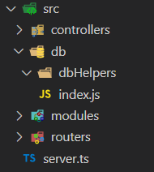

-
Initial 1.
Initial Setup
1. Create the following folder structure:

2. Initialize Git and npm
npm init -y
git init- set up a new github repo and add the remote to your local git
- commit and push the changes
- add a .gitignore file and ignore the node_modules folder and .env
1. Create the following folder structure:
-
Express 2.
Set Up Express/Prisma/Typescript
1. Install Express JS
npm i express2. Install Prisma with Typescript
npm i typescript ts-node @types/node prisma3. Create the Typescript Config File
create a tsconfig.json file at the root with the following content:{
"compilerOptions": {
"sourceMap": true,
"outDir": "dist",
"lib": ["esnext"],
"esModuleInterop": true
}
}4. Install Middleware
Let's install morgan and cors middleware:npm i morgan cors5. Create the Express Server
Add the following code in your server.ts file:import express from 'express';
import express from 'express';
import morgan from 'morgan';
import cors from 'cors';
const PORT = process.env.port || 3001;
const app = express();
app.use(morgan('dev'));
app.use(cors());
app.use(express.json());
app.use(express.urlencoded({ extended: true }));
app.get('/', (req, res) => {
res.json({ msg: 'Welcome to our app' });
});
app.use((req, res, next) => {
const err = new Error(`${req.method} ${req.url} Not Found`) as any;
err.status = 404;
next(err);
});
app.use((err, req, res, next) => {
console.error(err);
res.status(err.status || 500);
res.json({
error: {
message: err.message,
},
});
});
app.listen(PORT, () =>
console.log(`Server is listening on port ${PORT} in ${app.settings.env} mode`)
);
6. Add The Hot-Reload
A. Create the nodemon.json file with the following content
{
"ignore": [
"**/*.test.ts",
"**/*.spec.ts",
"node_modules"
],
"watch": [
"src"
],
"exec": "npm start",
"ext": "ts"
}B. Add The dev and start scripts to package.json
"scripts": {
"start": "ts-node server.ts",
"dev": "nodemon"
},C. If you don't have nodemon installed, you need to install it:
npm i nodemonnpm run dev
-
Prisma 3.
Install the Prisma Client
1. Install The Prisma Client
npm i @prisma/clientCreate the Client
Add the following content to the db/index.ts file:
import { PrismaClient } from "@prisma/client";
const prisma = new PrismaClient();
export default prisma;